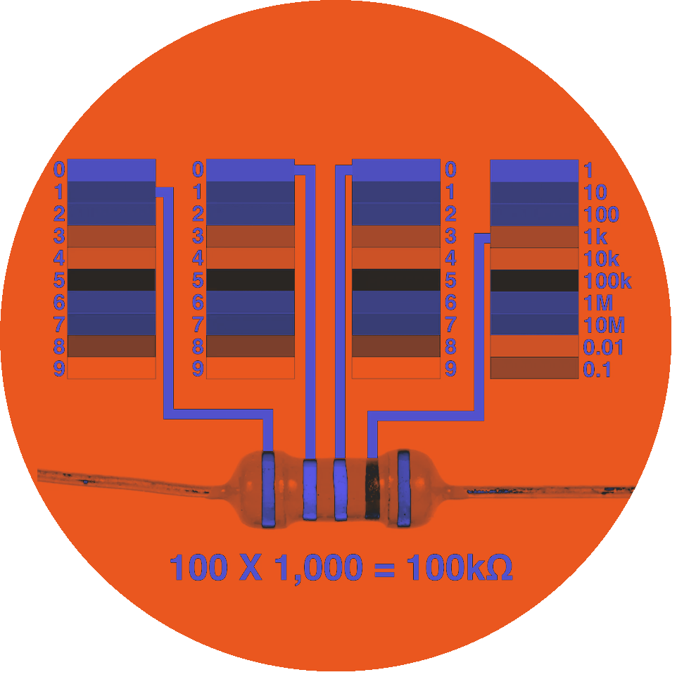

I thought you couldn’t surprise me anymore…
But now you respond to my touch?
With a potato, orange, and a piece of foil??
You totally caught me off guard...phew
I messed around with the senVal, tone duration, and delay.
But of course, you weren’t gonna make it easy, huh?
I thought foil, you know "it's metal",
it would be super responsive…
but nope!
You always gave me a hard time.
But still… it was intriguing.
I felt like I was playing the piano.
Have I ever touched a potato that gently before?
It was… oddly delicate.
A little strange...
A little sensual...
But I’m weirdly into it...
Also you sing?
I mean, adjusting pitch based on light intensity?
for a second I thought you were an opera singer.
Such a complicated little piece of code…
I tried adding or removing some notes and
played around with the delay to change the rhythm a bit.
I mean… it seems like it’s working, right?
And you dance too?
Spinning based on light intensity?
Honestly, that’s impressive.
I watched you dance
while changing the photo’s value and the rotation angle.
It felt like you're dancing to my movements.
The motor went whiiir~ whiiir~
Total poppin’ vibes!
Arduino…
haha...the more I get to know you,
the more you grow on me.
What am I supposed to do with that?
Sure,
you’re still a vast, mysterious world I can’t fully grasp.
I still get confused by the + and– signs on the breadboard,
 and all those resistor values, 10K, 1MΩ, 100KΩ
it’s endless....
And apart from GND and 5V on the controller board,
I’m still figuring out what the rest of those numbers mean.